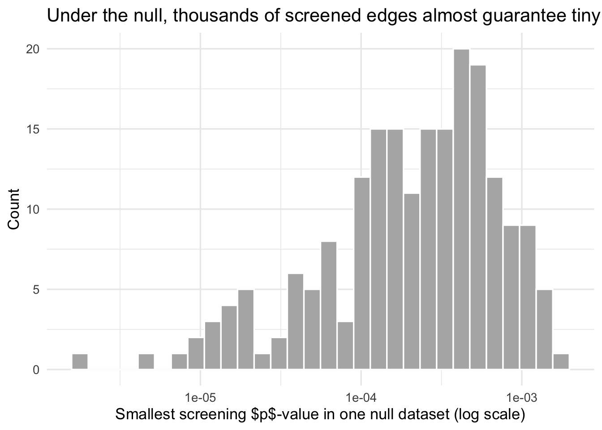
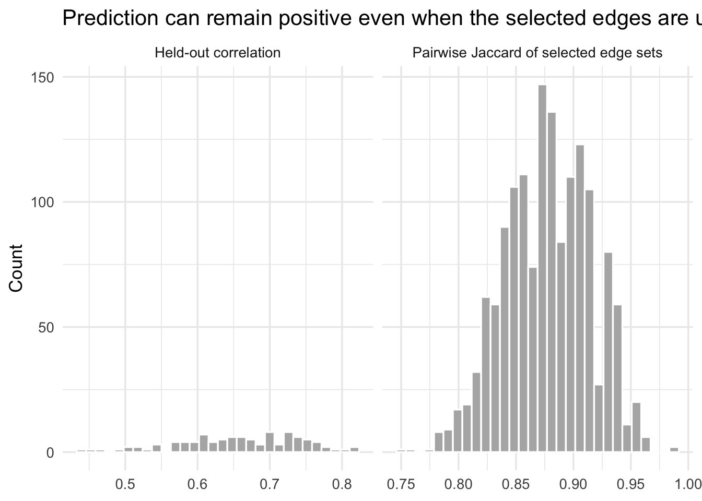
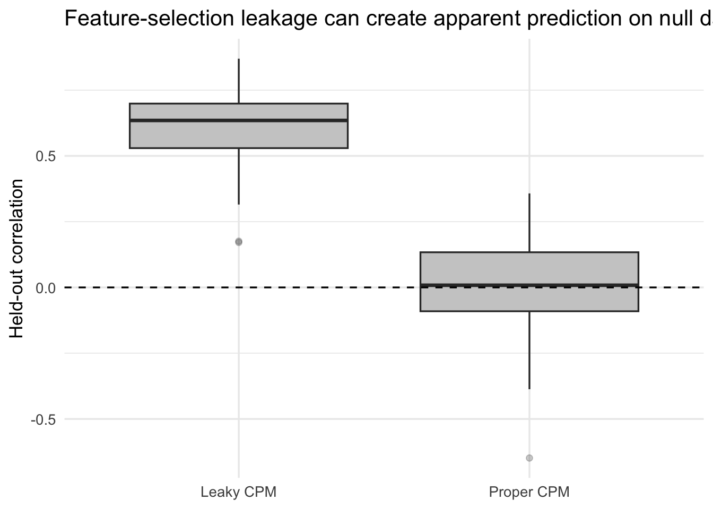
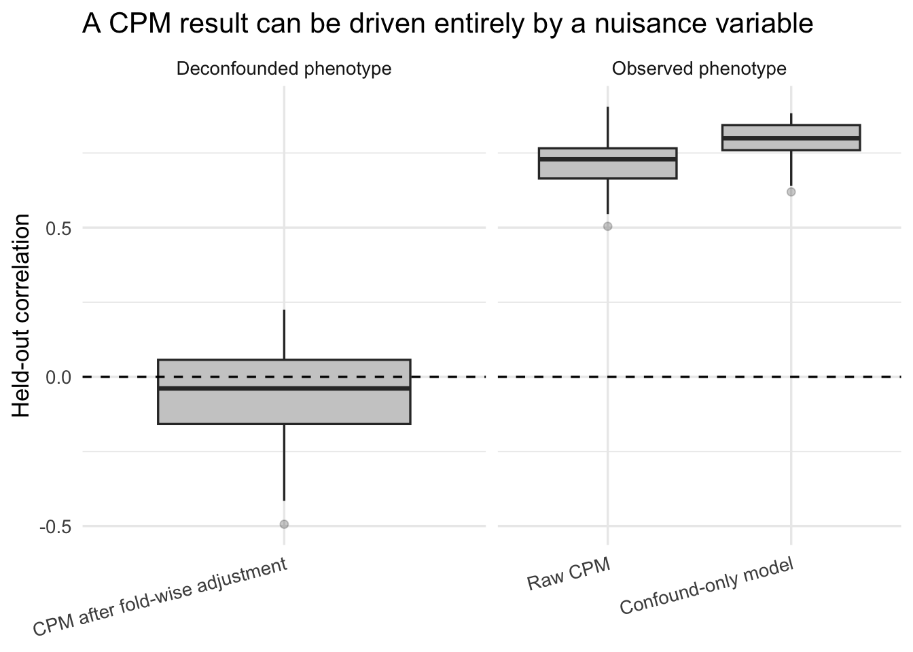
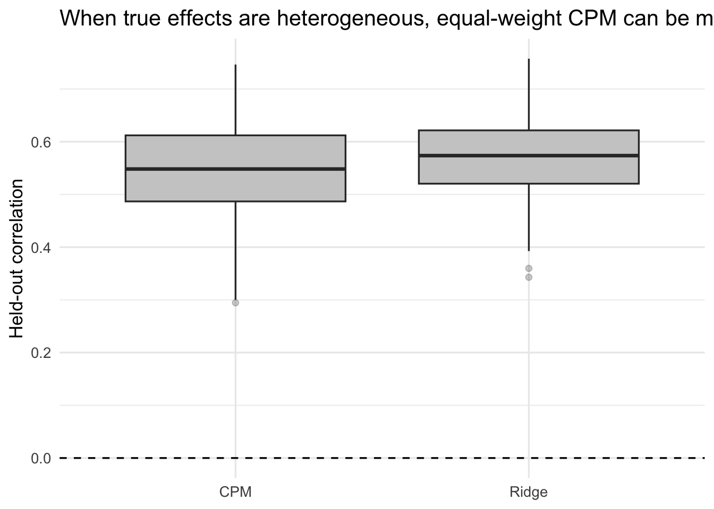

# install.packages(c("ggplot2", "dplyr", "tidyr", "purrr", "tibble", "glmnet"))
library(ggplot2)
library(dplyr)
library(tidyr)
library(purrr)
library(tibble)
library(glmnet)
theme_set(theme_minimal(base_size = 13))
set.seed(20260304)Connectome-Based Predictive Modeling is a heuristic, not a discovery engine
Neuroimaging
Connectome-based Predictive Modeling (CPM) is often presented as a pleasantly simple way to predict behavior from functional connectivity. The simplicity is real. The problem is that the statistical meaning of CPM seems to be often sold far beyond what the method actually delivers.
The central claim of this post is simple:
CPM can be a useful predictive heuristic, but it is not an inferential framework for discovering “significant edges,” identifying a stable “predictive network,” or licensing mechanistic language about brain-behavior relationships.
How come? Three points bring discomfort—mostly because CPM is the kind of method that looks like inference if you squint, but behaves like a heuristic if you stop squinting.
- CPM is a post-selection procedure. It uses the same training data both to screen edges and to fit the final predictor. The screening \(p\)-values are not valid inferential \(p\)-values for the selected edges (Taylor and Tibshirani 2015; Kuchibhotla, Kolassa, and Kuffner 2022).
- CPM is a feature-selection algorithm in a highly correlated feature space. In that setting, selection stability is an empirical question, not an entitlement (Nogueira, Sechidis, and Brown 2018).
- CPM is a very constrained linear model. It does not estimate a rich brain-wide weight map. It hard-thresholds edges, gives the surviving edges equal weight within sign, and then fits a two-predictor linear regression (Shen et al. 2017).
Disclaimer: This post does NOT try to recreate realistic fMRI physics or hemodynamics. The simulations are deliberately simple—their job is isolation rather than realism. Think of them as a wind tunnel for statistical failure modes: fake airplane, real aerodynamics.
WarningThe standard I am using here
A method should only be credited with claims that follow from its estimator and its validation design. For CPM, a held-out prediction result may justify a narrow predictive statement. It does not by itself justify edge-level significance, stable network identification, causal interpretation, or biomarker language.
What CPM actually estimates
In its classical form, CPM does the following on the training set (Shen et al. 2017):
For each edge \(j\), compute a marginal association with the target:
\[ r_j = \mathrm{cor}(x_j, y). \]
Select edges whose \(p\)-value falls below a threshold \(\alpha\).
Partition them into positive and negative sets:\[S^+ = \{j : r_j > 0,\; p_j < \alpha\}, \qquad S^- = \{j : r_j < 0,\; p_j < \alpha\}.\]
Construct summary scores for each subject by summing the surviving edges:
\[ s_i^+ = \sum_{j \in S^+} x_{ij}, \qquad s_i^- = \sum_{j \in S^-} x_{ij}. \]
Fit a linear regression on the training set:
\[ y_i = \beta_0 + \beta_+ s_i^+ + \beta_- s_i^- + \varepsilon_i . \]
Apply the fitted model to the held-out subjects.
At this point, CPM has done exactly what it promised: it built a prediction rule. The trouble begins when we ask it to testify in court as if it were an inference procedure.
If you expand that last line, CPM is really a hard-screened, equal-weighted linear model. Every selected positive edge receives the same weight up to the scalar (\(\beta_{+}\)) and every selected negative edge receives the same weight up to the scalar (\(\beta_{-}\)). All the other edges get zero weight. This model class is legitimate, but it is narrow by construction, and narrow estimators do not automatically come with broad interpretational licenses. (Think “tiny model, big claims” - a risky pairing.)
The simulations below are built around four consequences of that setup:
- screening \(p\)-values are easily abused,
- selected edge sets can be unstable,
- leakage and confounds can manufacture apparently persuasive prediction,
- and equal-weight thresholding can be a poor approximation to the underlying signal.
Setup
The code below uses only common R packages. glmnet is needed only for the ridge comparison in the last section.
The simulations below rely on several helper functions, which take care of (1) data splitting and preprocessing, (2) fitting and predicting with CPM, and (3) utilities for stability calculations and synthetic data generation. To keep the post readable, the implementation is folded. Click to expand if you’re curious about the details.
Helper functions
safe_cor <- function(x, y) {
if (is.na(sd(x)) || is.na(sd(y)) || sd(x) == 0 || sd(y) == 0) return(NA_real_)
cor(x, y)
}
make_splits <- function(n, repeats = 100, prop_train = 0.8, seed = 1) {
set.seed(seed)
replicate(repeats, sample(seq_len(n), size = floor(n * prop_train)), simplify = FALSE)
}
jaccard <- function(a, b) {
a <- unique(a)
b <- unique(b)
u <- union(a, b)
if (length(u) == 0) return(NA_real_)
length(intersect(a, b)) / length(u)
}
sample_jaccards <- function(sets, n_pairs = 2000, seed = 1) {
set.seed(seed)
all_pairs <- t(combn(seq_along(sets), 2))
if (nrow(all_pairs) > n_pairs) {
all_pairs <- all_pairs[sample(seq_len(nrow(all_pairs)), n_pairs), , drop = FALSE]
}
tibble(
pair = seq_len(nrow(all_pairs)),
jaccard = map_dbl(seq_len(nrow(all_pairs)), function(i) {
jaccard(sets[[all_pairs[i, 1]]], sets[[all_pairs[i, 2]]])
})
)
}
scale_train_test <- function(x_train, x_test) {
mu <- colMeans(x_train)
sdv <- apply(x_train, 2, sd)
sdv[sdv == 0 | is.na(sdv)] <- 1
train <- sweep(sweep(x_train, 2, mu, "-"), 2, sdv, "/")
test <- sweep(sweep(x_test, 2, mu, "-"), 2, sdv, "/")
list(train = train, test = test)
}
residualize_matrix <- function(train_mat, test_mat, c_train, c_test) {
train_mat <- as.matrix(train_mat)
test_mat <- as.matrix(test_mat)
z_train <- cbind(1, c_train)
z_test <- cbind(1, c_test)
coef <- qr.solve(z_train, train_mat)
train_resid <- train_mat - z_train %*% coef
test_resid <- test_mat - z_test %*% coef
list(train = train_resid, test = test_resid)
}
residualize_vector <- function(train_vec, test_vec, c_train, c_test) {
out <- residualize_matrix(
matrix(train_vec, ncol = 1),
matrix(test_vec, ncol = 1),
c_train,
c_test
)
list(train = as.numeric(out$train), test = as.numeric(out$test))
}
screen_edges <- function(x, y, p_thresh = 0.01) {
cors <- apply(x, 2, function(col) safe_cor(col, y))
cors[is.na(cors)] <- 0
n <- nrow(x)
tvals <- abs(cors) * sqrt((n - 2) / pmax(1e-8, 1 - cors^2))
pvals <- 2 * pt(-tvals, df = n - 2)
pos <- which(cors > 0 & pvals < p_thresh)
neg <- which(cors < 0 & pvals < p_thresh)
list(pos = pos, neg = neg, cors = cors, pvals = pvals)
}
fit_cpm <- function(x_train, y_train, p_thresh = 0.01, screen = NULL) {
if (is.null(screen)) {
screen <- screen_edges(x_train, y_train, p_thresh = p_thresh)
}
pos_sum <- if (length(screen$pos)) {
rowSums(x_train[, screen$pos, drop = FALSE])
} else {
rep(0, nrow(x_train))
}
neg_sum <- if (length(screen$neg)) {
rowSums(x_train[, screen$neg, drop = FALSE])
} else {
rep(0, nrow(x_train))
}
dat <- data.frame(y = y_train, pos_sum = pos_sum, neg_sum = neg_sum)
fit <- lm(y ~ pos_sum + neg_sum, data = dat)
list(fit = fit, screen = screen)
}
predict_cpm <- function(model, x_test) {
pos_sum <- if (length(model$screen$pos)) {
rowSums(x_test[, model$screen$pos, drop = FALSE])
} else {
rep(0, nrow(x_test))
}
neg_sum <- if (length(model$screen$neg)) {
rowSums(x_test[, model$screen$neg, drop = FALSE])
} else {
rep(0, nrow(x_test))
}
as.numeric(
predict(model$fit, newdata = data.frame(pos_sum = pos_sum, neg_sum = neg_sum))
)
}
ridge_predict <- function(x_train, y_train, x_test) {
fit <- cv.glmnet(x_train, y_train, alpha = 0, standardize = FALSE)
as.numeric(predict(fit, newx = x_test, s = "lambda.min"))
}
simulate_block_connectome <- function(
n = 200,
p = 800,
n_blocks = 20,
signal_blocks = 1:2,
signal_weights = NULL,
loading = 0.8,
edge_noise = 1,
outcome_noise = 1,
confound_x = 0,
confound_y = 0,
seed = NULL
) {
if (!is.null(seed)) set.seed(seed)
block_id <- rep(seq_len(n_blocks), each = ceiling(p / n_blocks))[seq_len(p)]
z <- matrix(rnorm(n * n_blocks), nrow = n, ncol = n_blocks)
confound <- as.numeric(scale(rnorm(n)))
x <- matrix(rnorm(n * p, sd = edge_noise), nrow = n, ncol = p)
for (b in seq_len(n_blocks)) {
idx <- which(block_id == b)
x[, idx] <- loading * z[, b] + x[, idx]
}
if (confound_x != 0) {
impacted_blocks <- seq_len(min(3, n_blocks))
for (b in impacted_blocks) {
idx <- which(block_id == b)
x[, idx] <- x[, idx] + confound_x * confound
}
}
if (length(signal_blocks) == 0) {
signal <- rep(0, n)
} else {
if (is.null(signal_weights)) signal_weights <- rep(1, length(signal_blocks))
signal <- z[, signal_blocks, drop = FALSE] %*% matrix(signal_weights, ncol = 1)
}
y <- as.numeric(scale(signal + confound_y * confound + rnorm(n, sd = outcome_noise)))
x <- scale(x)
list(
x = x,
y = y,
confound = confound,
block_id = block_id,
signal_blocks = signal_blocks
)
}
simulate_weighted_edges <- function(
n = 250,
p = 800,
n_blocks = 20,
active_blocks = 1:6,
n_signal_edges = 40,
loading = 0.8,
edge_noise = 1,
beta_scale = 0.7,
outcome_noise = 2,
seed = NULL
) {
if (!is.null(seed)) set.seed(seed)
block_id <- rep(seq_len(n_blocks), each = ceiling(p / n_blocks))[seq_len(p)]
z <- matrix(rnorm(n * n_blocks), nrow = n, ncol = n_blocks)
x <- matrix(rnorm(n * p, sd = edge_noise), nrow = n, ncol = p)
for (b in seq_len(n_blocks)) {
idx <- which(block_id == b)
x[, idx] <- loading * z[, b] + x[, idx]
}
signal_candidates <- which(block_id %in% active_blocks)
signal_edges <- sample(signal_candidates, size = n_signal_edges)
beta <- rep(0, p)
beta[signal_edges] <- rnorm(n_signal_edges, sd = beta_scale)
y <- as.numeric(scale(x %*% beta + rnorm(n, sd = outcome_noise)))
x <- scale(x)
list(
x = x,
y = y,
beta = beta,
signal_edges = signal_edges,
block_id = block_id
)
}Point 1: screening \(p\)-values look impressive even when nothing is there
The first issue is the easiest to forget because the \(p\)-values feel familiar. In CPM, edgewise \(p\)-values are used as a screening device. But when thousands of edges are screened, some will look tiny purely by chance. And once we keep only those winners, ordinary inferential language becomes invalid unless we explicitly account for the selection event (Taylor and Tibshirani 2015; Kuchibhotla, Kolassa, and Kuffner 2022).
Let’s consider a null simulation. If you screen enough edges, the null will eventually confess to something it did not do. There is no relationship between features and target. We just compute the smallest screening \(p\)-value across thousands of edges.
null_screen <- map_dfr(1:200, function(rep_id) {
x <- matrix(rnorm(120 * 3000), nrow = 120, ncol = 3000)
y <- rnorm(120)
scr <- screen_edges(x, y, p_thresh = 0.01)
tibble(
rep = rep_id,
min_p = min(scr$pvals),
n_edges_below_001 = sum(scr$pvals < 0.01)
)
})
null_screen %>%
summarize(
median_min_p = median(min_p),
mean_edges_below_001 = mean(n_edges_below_001),
max_edges_below_001 = max(n_edges_below_001)
)ggplot(null_screen, aes(x = min_p)) +
geom_histogram(bins = 30, fill = "grey70", color = "white") +
scale_x_log10() +
labs(
x = "Smallest screening $p$-value in one null dataset (log scale)",
y = "Count",
title = "Under the null, thousands of screened edges almost guarantee tiny $p$-values"
)
What this shows is not controversial. It is the basic geometry of screening many variables. But it matters because CPM papers often move too quickly from “these edges passed the threshold” to “these edges are implicated”. They are not the same claim.
ImportantTakeaway
In classical CPM, the edgewise \(p\)-values are screening statistics, not valid post-selection inferential \(p\)-values for the final selected edge set. Treating them as evidence that particular edges are “significant” is a category error.
Point 2: prediction can be decent while the selected network is unstable
Now we simulate a connectome-like feature matrix with correlated blocks of edges. The target depends on a small number of latent block-level factors. Many edges are therefore similarly predictive proxies. That is exactly the kind of setting where a thresholded feature-selection method can predict reasonably well while selecting different edge sets across different training samples. In other words, CPM can behave like a witness with many equally plausible stories: the prediction stays, but the cast of “important edges” keeps changing.
instab_dat <- simulate_block_connectome(
n = 200,
p = 800,
n_blocks = 20,
signal_blocks = 1:2,
loading = 0.8,
edge_noise = 1,
outcome_noise = 1.25,
seed = 10
)
instab_splits <- make_splits(nrow(instab_dat$x), repeats = 100, prop_train = 0.8, seed = 11)
instab_results <- map_dfr(seq_along(instab_splits), function(i) {
train_idx <- instab_splits[[i]]
test_idx <- setdiff(seq_len(nrow(instab_dat$x)), train_idx)
x_train <- instab_dat$x[train_idx, , drop = FALSE]
x_test <- instab_dat$x[test_idx, , drop = FALSE]
y_train <- instab_dat$y[train_idx]
y_test <- instab_dat$y[test_idx]
sc <- scale_train_test(x_train, x_test)
model <- fit_cpm(sc$train, y_train, p_thresh = 0.01)
pred <- predict_cpm(model, sc$test)
selected <- union(model$screen$pos, model$screen$neg)
tibble(
split = i,
test_cor = safe_cor(y_test, pred),
n_selected = length(selected),
selected = list(selected)
)
})
instab_jacc <- sample_jaccards(instab_results$selected, n_pairs = 1500, seed = 12)
instab_results %>%
summarize(
median_test_cor = median(test_cor, na.rm = TRUE),
median_n_selected = median(n_selected),
min_test_cor = min(test_cor, na.rm = TRUE),
max_test_cor = max(test_cor, na.rm = TRUE)
)instab_jacc %>%
summarize(median_jaccard = median(jaccard, na.rm = TRUE))instab_plot_data <- bind_rows(
tibble(metric = "Held-out correlation", value = instab_results$test_cor),
tibble(metric = "Pairwise Jaccard of selected edge sets", value = instab_jacc$jaccard)
)
ggplot(instab_plot_data, aes(x = value)) +
geom_histogram(bins = 30, fill = "grey70", color = "white") +
facet_wrap(~ metric, scales = "free_x") +
labs(
x = NULL,
y = "Count",
title = "Prediction can remain positive even when the selected edges are unstable"
)
If you see modest positive held-out correlations but low pairwise Jaccard overlap across resamples, it tells clearly that the selected network is not a uniquely identified scientific object. It is a sample-contingent solution to a correlated proxy problem.
That does not mean the prediction is fake. It means the story attached to the selected mask is too strong.
ImportantTakeaway
A CPM result can be predictively nonzero while the edge set itself is unstable. In that case, it is defensible to talk about a predictive association. It is not defensible to talk about a uniquely identified predictive network.
Point 3: leakage can manufacture performance
A correct prediction workflow must keep every supervised step inside the training data. In CPM that includes the edge-screening step. If you screen edges on the full dataset and then cross-validate, you have already allowed the test labels to shape the feature set. This is the statistical equivalent of reading the answer key “just to calibrate your intuition.”
Rosenblatt and colleagues showed that feature-selection leakage can drastically inflate connectome-based prediction performance (Rosenblatt et al. 2024). Here is a toy version of the same problem.
In this simulation there is no true signal at all. The target is pure noise.
leak_dat <- simulate_block_connectome(
n = 120,
p = 1500,
n_blocks = 30,
signal_blocks = integer(0),
loading = 0.7,
edge_noise = 1,
outcome_noise = 1,
seed = 20
)
leak_splits <- make_splits(nrow(leak_dat$x), repeats = 100, prop_train = 0.8, seed = 21)
full_screen <- screen_edges(leak_dat$x, leak_dat$y, p_thresh = 0.01)
leak_results <- map_dfr(seq_along(leak_splits), function(i) {
train_idx <- leak_splits[[i]]
test_idx <- setdiff(seq_len(nrow(leak_dat$x)), train_idx)
x_train <- leak_dat$x[train_idx, , drop = FALSE]
x_test <- leak_dat$x[test_idx, , drop = FALSE]
y_train <- leak_dat$y[train_idx]
y_test <- leak_dat$y[test_idx]
sc <- scale_train_test(x_train, x_test)
proper_model <- fit_cpm(sc$train, y_train, p_thresh = 0.01)
proper_pred <- predict_cpm(proper_model, sc$test)
leaky_model <- fit_cpm(sc$train, y_train, p_thresh = 0.01, screen = full_screen)
leaky_pred <- predict_cpm(leaky_model, sc$test)
tibble(
split = i,
method = c("Proper CPM", "Leaky CPM"),
test_cor = c(safe_cor(y_test, proper_pred), safe_cor(y_test, leaky_pred))
)
})
leak_results %>%
group_by(method) %>%
summarize(
mean_test_cor = mean(test_cor, na.rm = TRUE),
median_test_cor = median(test_cor, na.rm = TRUE),
sd_test_cor = sd(test_cor, na.rm = TRUE)
)ggplot(leak_results, aes(x = method, y = test_cor)) +
geom_boxplot(fill = "grey80", outlier.alpha = 0.25) +
geom_hline(yintercept = 0, linetype = 2) +
labs(
x = NULL,
y = "Held-out correlation",
title = "Feature-selection leakage can create apparent prediction on null data"
)
In a null setting, any systematic positive performance is manufactured. That is why leakage is not a small coding detail. It directly changes the scientific meaning of the result.
WarningTakeaway
If the edge screen saw the test subjects, the reported CPM score is not a valid out-of-sample estimate. It is an optimistically biased estimate produced by leakage (Rosenblatt et al. 2024).
Point 4: CPM can end up predicting a confound
The next failure mode is subtler. Even when the train-test separation is correct, the model may still learn a variable that is not of scientific interest. In neuroimaging that often means motion, site, age, family structure, or some other nuisance variable.
Snoek and colleagues showed that confound handling in decoding and prediction has to be done carefully, and in a cross-validated way, to avoid distorted conclusions (Snoek, Miletić, and Scholte 2019).
Here the phenotype is driven only by a confound. The connectome contains features influenced by that same confound. There is no direct signal from the connectome to the phenotype once the confound is removed.
conf_dat <- simulate_block_connectome(
n = 180,
p = 800,
n_blocks = 20,
signal_blocks = integer(0),
loading = 0.8,
edge_noise = 1,
outcome_noise = 1,
confound_x = 1.1,
confound_y = 1.3,
seed = 30
)
conf_splits <- make_splits(nrow(conf_dat$x), repeats = 100, prop_train = 0.8, seed = 31)
conf_results <- map_dfr(seq_along(conf_splits), function(i) {
train_idx <- conf_splits[[i]]
test_idx <- setdiff(seq_len(nrow(conf_dat$x)), train_idx)
x_train <- conf_dat$x[train_idx, , drop = FALSE]
x_test <- conf_dat$x[test_idx, , drop = FALSE]
y_train <- conf_dat$y[train_idx]
y_test <- conf_dat$y[test_idx]
c_train <- conf_dat$confound[train_idx]
c_test <- conf_dat$confound[test_idx]
sc <- scale_train_test(x_train, x_test)
raw_model <- fit_cpm(sc$train, y_train, p_thresh = 0.01)
raw_pred <- predict_cpm(raw_model, sc$test)
conf_model <- lm(y ~ c, data = data.frame(y = y_train, c = c_train))
conf_pred <- as.numeric(predict(conf_model, newdata = data.frame(c = c_test)))
rx <- residualize_matrix(sc$train, sc$test, c_train, c_test)
ry <- residualize_vector(y_train, y_test, c_train, c_test)
adj_model <- fit_cpm(rx$train, ry$train, p_thresh = 0.01)
adj_pred <- predict_cpm(adj_model, rx$test)
bind_rows(
tibble(
split = i,
target = "Observed phenotype",
method = "Raw CPM",
test_cor = safe_cor(y_test, raw_pred)
),
tibble(
split = i,
target = "Observed phenotype",
method = "Confound-only model",
test_cor = safe_cor(y_test, conf_pred)
),
tibble(
split = i,
target = "Deconfounded phenotype",
method = "CPM after fold-wise adjustment",
test_cor = safe_cor(ry$test, adj_pred)
)
)
})conf_results$method <- factor(
conf_results$method,
levels = c("Raw CPM", "Confound-only model", "CPM after fold-wise adjustment")
)
ggplot(conf_results, aes(x = method, y = test_cor)) +
geom_boxplot(fill = "grey80", outlier.alpha = 0.25) +
geom_hline(yintercept = 0, linetype = 2) +
facet_wrap(~ target, scales = "free_x") +
labs(
x = NULL,
y = "Held-out correlation",
title = "A CPM result can be driven entirely by a nuisance variable"
) +
theme(axis.text.x = element_text(angle = 15, hjust = 1))
If the raw CPM performs about as well as the confound-only model, and the deconfounded CPM collapses toward zero, then the message is not “CPM discovered brain signal.” The message is “CPM learned the confound.” To be fair, CPM did predict something real. It just predicted the wrong thing very efficiently.
That is why a confounds-only baseline is not optional window dressing. It is a scientific control.
ImportantTakeaway
A predictive result is not yet a brain-behavior result. If the same performance can be achieved by predicting the nuisance variable, then the CPM has not isolated the phenomenon of interest (Snoek, Miletić, and Scholte 2019).
Point 5: CPM is a constrained linear model, and the constraint can hurt
The last point is not about invalidity. It is about model class.
Suppose the true signal is a weighted combination of many edges with heterogeneous effect sizes. In that world, a regularized linear model can estimate a distributed weight map. Classical CPM cannot. It discards most edges, keeps the survivors, and then forces equal weights within sign.
That does not make CPM wrong. It makes it a strongly constrained approximation - useful, but not a magical “network finder.”
weighted_dat <- simulate_weighted_edges(
n = 250,
p = 800,
n_blocks = 20,
active_blocks = 1:6,
n_signal_edges = 40,
loading = 0.8,
edge_noise = 1,
beta_scale = 0.7,
outcome_noise = 2,
seed = 40
)
weighted_splits <- make_splits(nrow(weighted_dat$x), repeats = 100, prop_train = 0.8, seed = 41)
weighted_results <- map_dfr(seq_along(weighted_splits), function(i) {
train_idx <- weighted_splits[[i]]
test_idx <- setdiff(seq_len(nrow(weighted_dat$x)), train_idx)
x_train <- weighted_dat$x[train_idx, , drop = FALSE]
x_test <- weighted_dat$x[test_idx, , drop = FALSE]
y_train <- weighted_dat$y[train_idx]
y_test <- weighted_dat$y[test_idx]
sc <- scale_train_test(x_train, x_test)
cpm_model <- fit_cpm(sc$train, y_train, p_thresh = 0.01)
cpm_pred <- predict_cpm(cpm_model, sc$test)
ridge_pred <- ridge_predict(sc$train, y_train, sc$test)
tibble(
split = i,
method = c("CPM", "Ridge"),
test_cor = c(safe_cor(y_test, cpm_pred), safe_cor(y_test, ridge_pred))
)
})
weighted_results %>%
group_by(method) %>%
summarize(
mean_test_cor = mean(test_cor, na.rm = TRUE),
median_test_cor = median(test_cor, na.rm = TRUE),
sd_test_cor = sd(test_cor, na.rm = TRUE)
)ggplot(weighted_results, aes(x = method, y = test_cor)) +
geom_boxplot(fill = "grey80", outlier.alpha = 0.25) +
geom_hline(yintercept = 0, linetype = 2) +
labs(
x = NULL,
y = "Held-out correlation",
title = "When true effects are heterogeneous, equal-weight CPM can be misspecified"
)
If ridge consistently beats CPM here, the lesson is not that ridge is magically superior in every dataset. The lesson is narrower and more important: CPM’s interpretability is not free. It comes from imposing a crude model class.
When a paper talks as if CPM has discovered a meaningful weighted subnetwork, remember what the estimator actually did: threshold, sum, and fit two slopes.
ImportantTakeaway
CPM is not a general model of distributed connectivity effects. It is a specific constrained estimator. If it predicts well, that can be useful. But the constraint itself is part of the scientific story and has to be acknowledged.
What CPM can honestly claim
Used carefully, CPM can justify a modest statement such as:
In this dataset, under this preprocessing and validation design, a simple thresholded linear summary of connectivity carries out-of-sample information about the target.
That is already a meaningful result. But it is much narrower than the claims that are often made in the literature.
What CPM cannot claim on its own (and you should refrain from writing as such):
- “These edges are significant.” The screening \(p\)-values are not post-selection valid inferential \(p\)-values (Taylor and Tibshirani 2015; Kuchibhotla, Kolassa, and Kuffner 2022).
- “This is the predictive network.” Well, not unless selection stability has been demonstrated (Nogueira, Sechidis, and Brown 2018).
- “This reflects the mechanism of the phenotype.” Prediction is not mechanism.
- “This is a biomarker.” Not without stronger uncertainty quantification, external validation, and confound auditing. Small neuroimaging samples can produce large cross-validation error bars (Varoquaux 2018).
A minimal CPM audit checklist
If I saw a new CPM paper, these are the first things I would ask.
- Was edge screening performed strictly within each training split? If not, stop there (Rosenblatt et al. 2024).
- Were nuisance adjustments performed fold-wise? If not, confound control may itself be invalid (Snoek, Miletić, and Scholte 2019).
- Was a confounds-only baseline reported? If not, the result may be nuisance prediction in disguise.
- Was edge-selection stability reported? If not, the network interpretation is unsupported (Nogueira, Sechidis, and Brown 2018).
- Was CPM compared to a regularized linear baseline? If not, it is impossible to tell whether the threshold-and-sum constraint is helping or merely simplifying the story.
- Were claims limited to prediction, or did the paper drift into inference and mechanism? The latter requires more than CPM itself.
The bottom line
The strongest critique of CPM is not that it is simple. The strongest critique is that simplicity has often been used as a rhetorical bridge from prediction to explanation.
With all due respect, that bridge is not licensed by the method. If CPM were a person, it would be very good at predicting your height from your shoes and very confused about why you are asking it to explain genetics.
CPM is, without any doubt, indeed valuable as a baseline, a didactic tool, or a quick heuristic predictor. But if we want to make claims about significant edges, stable subnetworks, mechanistic interpretation, or biomarker-level evidence, then the burden of proof is much higher than a thresholded cross-validated sum-score model can bear.
References
Kuchibhotla, Arun K., John E. Kolassa, and Todd A. Kuffner. 2022. “Post-Selection Inference.” Annual Review of Statistics and Its Application 9 (1): 505–27. https://doi.org/10.1146/annurev-statistics-100421-044639.
Nogueira, Sarah, Konstantinos Sechidis, and Gavin Brown. 2018. “On the Stability of Feature Selection Algorithms.” Journal of Machine Learning Research 18 (174): 1–54.
Rosenblatt, Matthew, Link Tejavibulya, Rongtao Jiang, Stephanie Noble, and Dustin Scheinost. 2024. “Data Leakage Inflates Prediction Performance in Connectome-Based Machine Learning Models.” Nature Communications 15 (1): 1829. https://doi.org/10.1038/s41467-024-46150-w.
Shen, Xilin, Emily S Finn, Dustin Scheinost, Monica D Rosenberg, Marvin M Chun, Xenophon Papademetris, and R Todd Constable. 2017. “Using Connectome-Based Predictive Modeling to Predict Individual Behavior from Brain Connectivity.” Nature Protocols 12 (3): 506–18. https://doi.org/10.1038/nprot.2016.178.
Snoek, Lukas, Steven Miletić, and H. Steven Scholte. 2019. “How to Control for Confounds in Decoding Analyses of Neuroimaging Data.” NeuroImage 184 (January): 741–60. https://doi.org/10.1016/j.neuroimage.2018.09.074.
Taylor, Jonathan, and Robert J. Tibshirani. 2015. “Statistical Learning and Selective Inference.” Proceedings of the National Academy of Sciences 112 (25): 7629–34. https://doi.org/10.1073/pnas.1507583112.
Varoquaux, Gaël. 2018. “Cross-Validation Failure: Small Sample Sizes Lead to Large Error Bars.” NeuroImage 180 (October): 68–77. https://doi.org/10.1016/j.neuroimage.2017.06.061.
Citation
BibTeX citation:
@online{you2026,
author = {You, Kisung},
title = {Connectome-Based {Predictive} {Modeling} Is a Heuristic, Not
a Discovery Engine},
date = {2026-03-04},
url = {https://kisungyou.com/Blog/blog_006_critique_cpm.html},
langid = {en}
}
For attribution, please cite this work as:
You, Kisung. 2026. “Connectome-Based Predictive Modeling Is a
Heuristic, Not a Discovery Engine.” March 4, 2026. https://kisungyou.com/Blog/blog_006_critique_cpm.html.